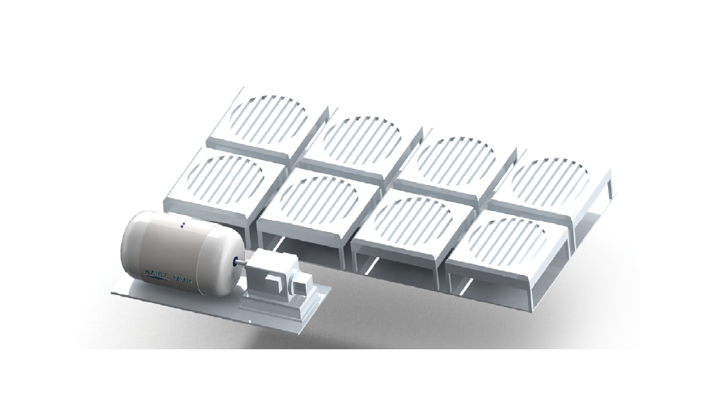

연구성과 10선
연구성과 10선
KAIST RESEARCH ACHIEVEMENTS
초임계 이산화탄소 냉각
초소형 모듈원자로
원자력및양자공학과 이정익ㆍ김용희ㆍ정용훈
요약
지금부터 멀지 않은 미래에 초소형 모듈원전이 개발되어, 다양한 지역의 전력 수요를 충족할 것이다. 초소형 모듈원전은 기존의 대형 원자력 발전소보다 향상된 안전성과 유지보수의 간편성으로 대형 원자력 발전소에서 벌어질 수 있는 대형사고를 미연에 방지할 수 있다. 또한 한 기당 적재되어 있는 방사선 물질의 양이 대형원자력 발전소보다 적기 때문에 잠재적으로 발생할 수 있는 사고에 의한 피해의 규모도 작아진다. 수명이 다한 초소형 모듈원전은 안전하게 가동을 중단하고 다시 공장으로 이송하여 최종 해체되기 때문에 주변지역에 미치는 방사선 영향을 최소화할 수 있다. 카이스트에서 개발하고 있는 초소형 모듈원전은 기존의 물로 냉각하던 원자력 발전소 개념에서 벗어나 이산화탄소를 이용하여 원자로를 냉각하고 발전까지 한다. 특히 초임계 상태의 이산화탄소를 이용하면 20년간 연료 재장전 없이 발전하는 원자로를 설계할 수 있으며, 동시에 발전시스템 전체를 초소형화하여 트럭으로도 전체 원자력 발전소가 운반될 수 있을 정도로 만들 수 있다.
연구내용
이러한 장점으로 카이스트에서 개발한 초소형 모듈원전은 우선적으로 해양플랜트, 극지방, 알래스카, 러시아와 북부 유럽, 중동, 아프리카 등 극한의 기후나 환경을 가진 지역에 매우 유용한 전력 공급원으로 사용될 수 있다. 또한 초소형 모듈원전은 이산화탄소를 냉매로 사용하여 근방의 냉각수를 필요로 하지 않으므로 인구가 수십만 정도인 소규모 도시의 독립전원으로도 사용될 수 있으며 내륙지방으로 운송하여 다양한 전력 수요를 만족시킬 수 있다. 행성간 유인 우주탐사나 달탐사 기지와 같이 대량의 전력을 물이나 공기가 없이 생산하여야 하는 우주 탐사에도 초소형 모듈원전의 개념을 적용할 수 있다.
전 세계적으로 대형 원자력 발전소에 대한 관심이 소형이며 모듈화가 가능한 원자력 시스템에 대한 관심으로 옮겨가고 있다. 그러나 현재까지 제안된 소형모듈원전 개념들을 살펴보면, 대형 원자력 발전소에 비해서 크기의 소형화는 달성하였으나, 모듈화는 부분적으로만 달성하였다. 본 연구에서는 이러한 한계점을 극복하기 위해 기존의 발전계통인 증기 Rankine 사이클을 초임계 이산화탄소 Brayton 사이클로 대체하여 전체 원자로와 전력생산계통의 완전 모듈화를 이루고자 하였다. 또한 원자로 냉각재로 초임계 이산화탄소를 사용하는 가스냉각 고속로 개념을 제안하였다. 따라서 한 번 연료 장전을 한 후 20년간 재장전없이 운전이 가능한 원자로 개념과 원자로와 발전시스템이 일체화되어 있는 원자력 발전시스템 개념을 개발하였다. 장기간 운전을 하여도 높은 신뢰도를 보장하기 위해서 대형 원자력 발전소의 발전계통에서 사용하지 않는 개념들을 활용하여 초소형 모듈원전 발전계통 기기들의 윤활, 냉각, 토크전달 기술을 적용한다. 이 연구에서 제안하는 초소형 모듈원전의 개발은 원자력 산업이 기존에 기여하던 전력산업 뿐만 아니라 해양산업 및 중화학, 철강산업 등 화석연료에서 발생하는 에너지에 의존도가 높은 산업 분야에서 이산화탄소 배출을 저감하는 데에 크게 기여할 것이다. 더 나아가서 극한환경(극지, 사막, 우주 등)이나 에너지 공급이 어려운 지역에 손쉽게 장기간 에너지를 공급할 수 있는 수단으로 사용될 것으로 예상한다.
기존의 소형모듈원전은 대형원자력 발전소와 동일하게 대부분 물을 냉각재로 사용하며 산화 우라늄을 핵연료로 사용하기 때문에, 대형원전에서는 이 기술이 높은 경제성 달성이 가능하나 소형모듈원전에서는 소형화와 완전 모듈화를 통한 경제성 실현에 한계를 가지고 있다.
본 연구에서는 이 점에 착안하여 초임계 이산화탄소를 냉각재로 사용하고 질화우라늄을 핵연료로 사용하는 장주기 노심(핵연료 재장전 없이 20년 이상 가동 가능)을 가지는 초임계 이산화탄소 냉각 초소형 모듈원자로(KAIST MMR) 개념을 도출하였다. 아울러 13대 산업엔진 사업으로 지정된 초임계 이산화탄소 발전계통을 적극 차용하여 발전계통을 단순화하고 노심 정지시 붕괴열 제거를 위한 피동 잔열제거 시스템도 포함하여 후쿠시마 사고의 재발이 방지된 신개념 원자력 발전시스템 개념을 개발 하였다.
주요 연구결과물로는 노심과 발전계통이 하나의 용기에 모두 담기도록 개념 설계를 진행하여 제안된 원자력 발전소의 소형화와 모듈화에 대한 가능성을 확인하였다. 또한 원자로 설계에서는 장주기 저농축 우라늄 고속로에 적합한 질화우라늄(UN) 핵연료를 선정하고 원자로 제어를 위한 동특성 변수 등을 설계하고 평가하였다.
발전계통에서는 초임계 이산화탄소 전력변환 시스템의 장점인 초소형 고효율을 적극 활용하여 매우 단순하면서도 효율이 높은 발전시스템을 구성하였다. 더 나아가서 발전시스템에 적용되는 신개념 열교환기인 반도체 생산공정을 차용한 차세대 열교환기, PCHE를 활용하고 기존에 대형 시스템에 활용되지 않던 횡류형 터보머신을 사용하는 기술적성과를 거두었다. 후쿠시마 사고에서도 증명되었듯이 원자력 발전소는 노심이 정지가 되더라도 붕괴열이 발생하여 외부 전원이 없으면 자연적으로 냉각하지 못하여 큰 피해가 발생할 수 있다. 이런 문제가 없게 하기 위해서 본 연구를 통해 제안하는 KAIST MMR(Micro Modular Reactor)은 노심이 정지되고 나서도 자연적으로 냉각될 수 있는 피동 잔열제거 계통을 설계하였다.
 그림 1. 미래에 점진적으로 차용될 분산발전에 대응할 수 있는 경제적이면서도 안전한 원자력 발전소 개념을 제안하였다. 중소형 도시 및 대형 원전을 도입하기 쉽지 않은 개발도상국, 그리고 수원이 부족한 중동, 극지 등지에서 안전하면서 신뢰성이 높은 소형 원전의 우선 수요처로 예상된다.해양산업과 중화학, 철강산업 등 화석 연료에서 발생하는 에너지에 의존하는 산업에서 이산화탄소 배출을 저감하는 데에 크게 기여할 수 있다. 모듈화로 제작하여 운송하며 공사기간 단축으로 경제성을 갖출 수 있는 원전을 사회에 안전하게 공급할 수 있다. 현재 국내에서는 산업통상자원부 R&D 전략기획단 주관으로 13대 산업엔진에 포함된 초임계 CO2 발전시스템 개발 사업과 연계하여 미래형 발전시스템의 원자력 에너지 적용에 선도적인 역할을 수행할 수 있는 원자로 개념을 제안하였다.
연구실적
ㆍKAIST 2014 10대 연구성과 선정
ㆍ한국원자력학회 우수 포스터상 - 'Preliminary design of S-CO2 Brayton cycle for KAIST Micro Modular Reactor', 김성구, 김민길, 배성준, 이정익, 2013년 10월
ㆍ초임계 이산화탄소 냉각 초소형 모듈원전(Micro Modular Reactor), 출원일 2014-08-07, 출원번호 10-2014-0101841
ㆍ초임계 이산화탄소 발전시스템을 위한 출력제어 시스템(Power control system for supercritical carbon dioxide power conversion system), 출원일 2015-02-06, 출원번호 10-2015-0018333
참고자료
ㆍ논문1: Min Gil Kim, Jeong Ik Lee, Donny Hartanto, Yong Hee Kim, 'Conceptual Design ofS-CO2 Cooled Micro Modular Reactor', Jeju, Korea, May 30-31, 2013
ㆍ논문2: Seong Gu Kim, Min Gil Kim, Seong Jun Bae, Jeong Ik Lee, 'Preliminary Design of S-CO2 Brayton Cycle for KAIST Micro Modular Reactor', Transactions of the Korean Nuclear Society Autumn Meeting, Gyeongju, Korea, October 24-25, 2013
ㆍ논문3: Seung Joon Baik, Seong Jun Bae, Seong Gu Kim, Jeong Ik Lee, 'Preliminary Design of KAIST Micro Modular Reactor with Dry Air Cooling', Transactions of the Korean Nuclear Society Spring Meeting, Jeju, Korea, May 29-30, 2014
ㆍ논문4: Seong Gu Kim, Seongkuk Cho, Hwanyeal Yu, Yonghee Kim, Yong Hoon Jeong, Jeong Ik Lee, 'System Design of a Supercritical CO2 cooled Micro Modular Reactor', Proceedings of the HTR 2014, Weihai, China, October 27-31, 2014
ㆍ논문5: Hwanyeal Yu, Donny Hartanto, Yonghee Kim, 'A conceptual Study on a Supercritical CO2-cooled Micro Modular Reactor', Proceedings of the HTR2014, Weihai, China, October 27-31. 2014
연구지원
ㆍ소형 모듈원전 개념설계 - High Risk and High Return Project(HRHRP), 2010년 7월~2013년 12월
ㆍ초임계 이산화탄소 냉각 초소형 모듈원전 ? supercritical CO2 cooled Micro Modular Reactor(MMR), 2013년 6월~2016년 5월